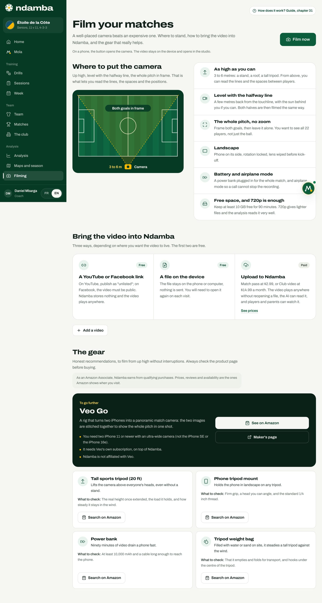
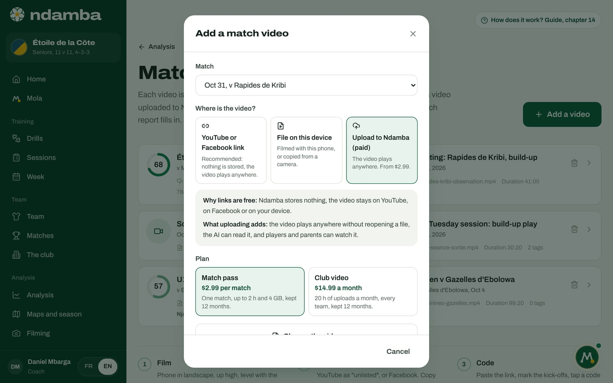
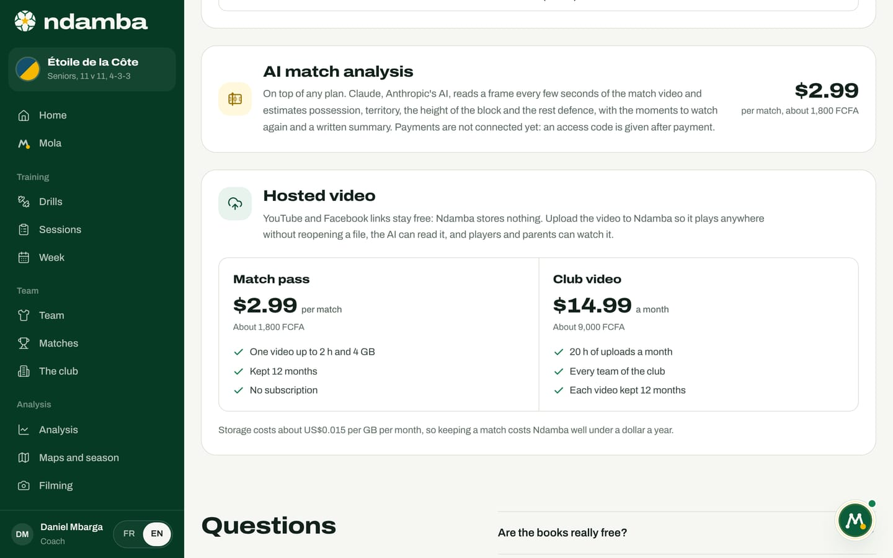

Filming and hosting: camera, links, paid upload
The Film your matches page: where to put the camera, the three ways to bring a video into Ndamba (a YouTube or Facebook link, a file on the device, the paid upload to Ndamba), the Match pass and Club video plans, what storage really costs, where things stand today (a demonstration), and the recommended gear, from the Veo Go to a simple tripod.
10 min read
All of Ndamba’s analysis starts with a video. Not a television video: the one from a phone set up high, at the edge of a dirt or artificial pitch, held by a parent, an injured player or an assistant. A good match video does not depend on an expensive camera; it depends on where you stand. This chapter opens the Film your matches page, explains the three ways to hand the video to Ndamba, including the new paid one that hosts it on Ndamba, and ends with the gear that really helps.
The Film your matches page
In the menu, under Analysis, tap Filming (address /app/filmer). On a phone it sits in the More panel. The subtitle sets the tone: "A well-placed camera beats an expensive one. Where to stand, how to bring the video into Ndamba, and the gear that really helps."


At the top sits the Film now button. "On a phone, the button opens the camera. The video stays on the device and opens in the studio." The filmed match becomes a video named "Match filmed on" followed by the date, linked to the active team, and the studio opens on it for coding (chapter 29). On a computer, the same button opens a file picker for a video.
Where to put the camera
The Where to put the camera diagram shows the pitch from above, the camera at the side, level with the halfway line, with two markers: 3 to 6 m of height and Both goals in frame. "Up high, level with the halfway line, the whole pitch in frame. That is what lets you read the lines, the spaces and the positions."
Six tips follow:
| Tip | What to do |
|---|---|
| As high as you can | 3 to 6 metres: a stand, a roof, a tall tripod. From above, you can read the lines and the spaces between players. |
| Level with the halfway line | A few metres back from the touchline, with the sun behind you if you can. Both halves are then filmed the same way. |
| The whole pitch, no zoom | Frame both goals, then leave it alone. You want to see all 22 players, not just the ball. |
| Landscape | Phone on its side, rotation locked, lens wiped before kick-off. |
| Battery and airplane mode | A power bank plugged in for the whole match, and airplane mode so a call cannot stop the recording. |
| Free space, and 720p is enough | Keep at least 10 GB free for 90 minutes. 720p gives lighter files and the analysis reads it very well. |
Why so much insistence on height and a fixed frame? Because the coding, the maps and the AI analysis read spaces: the distance between two lines, the side the block was drawn to, the number of players behind the ball. A camera at ground level, or one that follows the ball while zooming, shows the ball carrier and hides everything else. Do not move at half-time: the teams change ends, not the camera (chapter 12).
Three ways to bring the video into Ndamba
The Bring the video into Ndamba block sums it up: "Three ways, depending on where you want the video to live. The first two are free."
| A YouTube or Facebook link | A file on the device | Upload to Ndamba | |
|---|---|---|---|
| Price | Free | Free | Paid, from $2.99 |
| Where the video lives | On YouTube ("unlisted") or on Facebook (public) | On the phone or computer | On Ndamba |
| On each visit | Nothing to do, it plays anywhere | You reopen the file | Nothing to do, it plays anywhere |
| Drawing, zoom, frame by frame, clip export | No | Yes | Yes |
| AI analysis | With the original file | Yes | Yes |
| What Ndamba stores | The link, nothing else | Nothing | The video |
Under the three cards, See prices opens the hosting section of the Premium page and Add a video opens the add window.
A YouTube or Facebook link. This is the recommended way when the connection allows it. On YouTube, publish the video as "unlisted" (only people with the link can see it), never as "private", and leave embedding allowed. On Facebook, the video must be public. Ndamba keeps only the link (chapter 12).
A file on the device. Without internet, or to go fast after the match: the video the phone has just recorded, or one copied from a camera. The file is never sent, and Ndamba does not keep it: on each visit the studio asks you to open it again, and your codes and clips fall back into place at the right moments (chapter 14).
Upload to Ndamba. The third, paid way answers the limits of the other two: the video plays anywhere without reopening a file, the AI analysis can read it directly, and players and parents will be able to watch their clips.
Upload a video to Ndamba


- Open the Add a match video window: from Analysis, Match videos, the club’s video library or Add a video on the Film your matches page. Choose the Match.
- Under Where is the video?, choose Upload to Ndamba (paid): "The video plays anywhere. From $2.99."
- The window explains the choice in two lines. Why links are free: "Ndamba stores nothing, the video stays on YouTube, on Facebook or on your device." What uploading adds: "the video plays anywhere without reopening a file, the AI can read it, and players and parents can watch it."
- Choose the Plan: Match pass or Club video (below).
- Tap Choose the video. Ndamba reads the file’s size and length on the device, without sending anything ("Reading the file"), then shows its name, size and length.
- A summary gives what is to pay: for a Match pass, "To pay for this match" and "About 1,800 FCFA, once."; for Club video, the hours used this month with this video out of the 20 hours. Then what is included: Kept until a date twelve months later, Plays on every device, without reopening a file, Readable by the AI analysis, and depending on the plan Players and parents can watch their clips or For every team of the club.
- Tap Upload (demo). A bar shows Uploading, then Video ready, and the line "demo: nothing was sent or charged".
The limits are checked before uploading. A file over 4 GB or longer than 2 hours does not fit a Match pass: the window suggests choosing Club video, or exporting the video in 720p. With Club video, a video that would go past the month’s 20 hours is refused.
The two hosting plans
| Match pass | Club video | |
|---|---|---|
| Proposed price | $2.99 per match (about 1,800 FCFA) | $14.99 a month (about 9,000 FCFA) |
| What it covers | One video up to 2 h and 4 GB | 20 h of uploads a month |
| For whom | One team, one important match | Every team of the club |
| Kept for | 12 months | 12 months for each video |
| Commitment | No subscription | Monthly |


The Premium page repeats these two plans in its Hosted video section, after the AI analysis: "YouTube and Facebook links stay free: Ndamba stores nothing. Upload the video to Ndamba so it plays anywhere without reopening a file, the AI can read it, and players and parents can watch it." These prices are proposals, to be confirmed with pilot clubs.
What storage really costs
The Premium page puts it in one sentence: "Storage costs about US$0.015 per GB per month, so keeping a match costs Ndamba well under a dollar a year." The calculation, noted in the app’s configuration, is simple. Object storage such as Cloudflare R2 costs about $0.015 per gigabyte per month, with no fee when the video is watched. A 90-minute match in 720p weighs about 2 GB: keeping it a year costs roughly $0.36. A 4 GB file, the Match pass limit, roughly $0.72.
So the price does not only pay for storage. It covers the upload, playback on every device, managing who may watch, and the margin that keeps the books, the drills and the links free. It is also why links stay free: they cost Ndamba nothing.
Today: a demonstration
It needs saying as plainly as the app says it: today, nothing is sent and nothing is billed. The upload flow is complete on screen, but it runs as a demonstration:
- the file stays on the device, and the "uploaded" video plays for the current browser session only;
- no payment takes place;
- the pro club demo video, marked Hosted on Ndamba and demo in the studio, is an animation served by Ndamba’s site, not a video uploaded by a club.
For uploads to become real, the site owner has to connect storage. Ndamba’s server currently answers that storage is not configured. It expects three variables, set by the owner in the hosting settings and never in the code: VIDEO_STORAGE (the address of an S3-compatible storage, Cloudflare R2 for example), VIDEO_STORAGE_KEY_ID and VIDEO_STORAGE_SECRET. Even with these variables, the real upload path is still to be written: the server will check the payment and the limits, give the browser a temporary upload address so the video goes straight to storage, record the twelve-month expiry, and only let club members with the right to watch play it. It is a step of the roadmap (chapter 26), alongside accounts and payments.
The gear
The The gear section starts with a promise: "Honest recommendations, to film from up high without interruptions. Always check the product page before buying."
Veo Go, to go further. A dark card presents the Veo Go: "A rig that turns two iPhones into a panoramic match camera: the two images are stitched together to show the whole pitch in one shot." Three points go with it, to read before buying:
- "You need two iPhone 11 or newer with an ultra-wide camera (not the iPhone SE or the iPhone 16e)."
- "It needs Veo’s own subscription, on top of Ndamba."
- "Ndamba is not affiliated with Veo."
Two buttons: See on Amazon and Maker’s page. The panoramic video this system produces comes into Ndamba like any other, as a link or a file.
Four simple accessories. Each has a card with what it is for and What to check: before buying, then a Search on Amazon button, which opens a search rather than one specific product:
| Accessory | What it is for | What to check |
|---|---|---|
| Tall sports tripod (20 ft) | Getting the camera above the heads, even without a stand | The real height once extended, the load it takes and how stable it is in the wind |
| Phone tripod mount | Holding the phone in landscape on any tripod | Jaws that grip hard, a swivel head and the standard screw thread (1/4 inch) |
| Power bank | Lasting 90 minutes of video | At least 10,000 mAh and a cable long enough to reach the phone |
| Tripod weight bag | Steadying a tall tripod in the wind, filled with water or sand on site | That it empties and folds for transport, and hooks to the centre of the tripod |
This guide gives no prices or reviews for these products: they change, and the page shows none either. "Prices, reviews and availability are the ones Amazon shows when you visit."
The Amazon Associate disclosure. The page’s Amazon links carry the tag of the Amazon Associates programme, and the page says so before the first link, under the gear heading: "As an Amazon Associate, Ndamba earns from qualifying purchases." The price the buyer pays does not change. It is a small source of income, not a reason to choose: the placement advice works with any phone and any tripod.